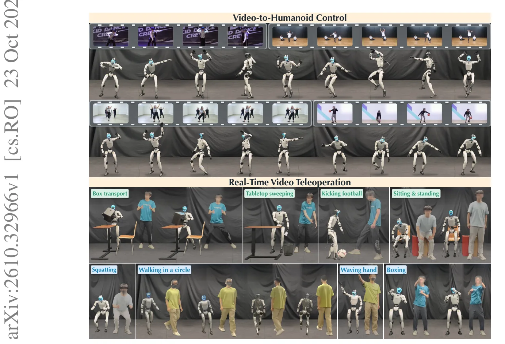
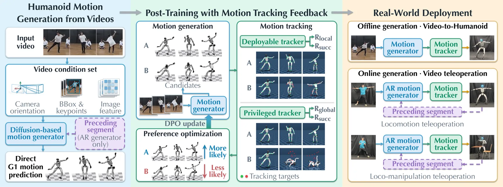
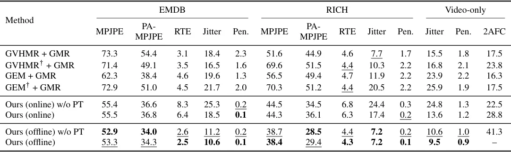
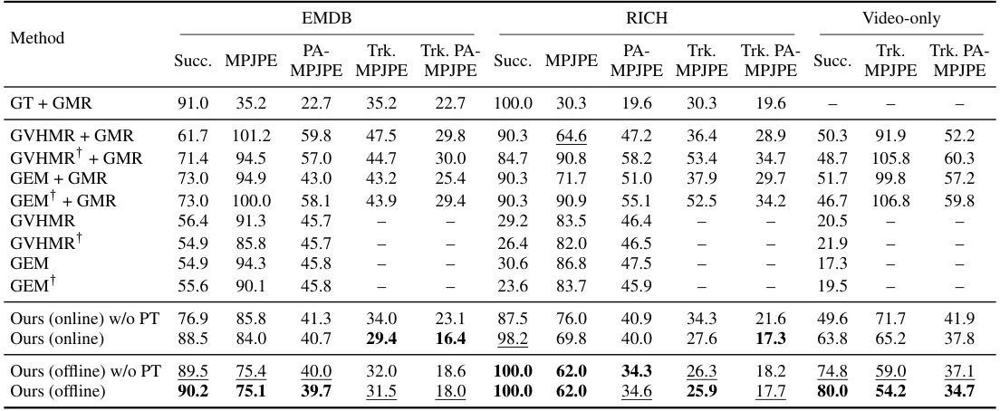

O Problema da Cascata de Erros em Pipelines Modulares
O sonho de controlar robôs humanoides complexos a partir de vídeos humanos é atraente pela escalabilidade. Bancos de dados de captura de movimento são limitados em diversidade e escala comparados à internet. No entanto, a abordagem padrão para resolver isso é o pipeline de reconstrução-retargeting-rastreamento. Primeiro, um modelo de visão computacional reconstrói a pose humana 3D a partir do vídeo. Em seguida, uma etapa de retargeting adapta essa pose para a morfologia do robô. Por fim, uma política de controle tenta rastrear essa referência gerada.
Esse pipeline modular tem uma falha estrutural fundamental: a separação dos estágios. A reconstrução humana é otimizada para a anatomia humana, não para a dinâmica do robô. O retargeting opera apenas sobre a saída da reconstrução, sem acesso às evidências visuais originais. Erros acumulam-se entre as etapas. Uma pose humana plausível pode se tornar dinamicamente inviável ou fisicamente inconsistente após o retargeting, tornando a tarefa do rastreador final muito mais difícil ou impossível de executar com precisão.
A Ideia Central: Geração Direta e Feedback de Execução
O paper ViT-H, de pesquisadores da Universidade de Pequim e institutos afiliados, propõe uma mudança de paradigma: geração e rastreamento (generation-and-tracking). Em vez de reconstruir o humano e depois adaptar, o modelo gera diretamente a referência de movimento no espaço de ação do humanoid (Unitree G1), condicionada ao vídeo de entrada. Isso elimina o gargalo da reconstrução humana intermediária.
O diferencial técnico não é apenas a geração direta, mas o ciclo de feedback. Os autores utilizam o próprio rastreador de movimento para avaliar a qualidade da referência gerada. Se o rastreador consegue executar a motion com sucesso, isso serve como um sinal de recompensa. Esse feedback é usado para pós-treinar o gerador, alinhando as distribuições de movimento gerado com o que é fisicamente executável pelo robô.

Arquitetura do Modelo: Difusão e Autoregressão
O núcleo do ViT-H é um gerador de movimentos baseado em modelos de difusão (diffusion model), similar ao DDPM de Ho et al. (2020). Este modelo é condicionado por características do vídeo, incluindo orientações da câmera, bounding boxes, keypoints e features da imagem. Ele gera sequências de movimentos do humanoid diretamente. O pré-treinamento ocorre em pares de vídeo-movimento e dados apenas de movimento, aprendendo a mapear a aparência visual para a dinâmica corporal.
Para aplicações em tempo real, os autores introduzem uma variante autoregressiva. Em vez de gerar todo o vídeo de uma vez, o modelo produz movimentos em segmentos temporais. Cada segmento é condicionado não apenas ao vídeo, mas também aos segmentos anteriores gerados. Isso permite teleoperação online, onde o robô reage continuamente ao fluxo de vídeo, mantendo uma latência inferior a 400 milissegundos.
Pós-Treinamento com Otimização de Preferência Direta (DPO)
A inovação mais crítica do paper é o método de pós-treinamento. Os autores utilizam a Otimização de Preferência Direta (Direct Preference Optimization - DPO), uma técnica popular em alinhamento de LLMs, adaptada para robótica. Eles não precisam de anotações manuais de qualidade. Em vez disso, executam as referências geradas pelo modelo em um simulador (MuJoCo) usando uma política de rastreamento.
Se o rastreador consegue seguir a referência com sucesso (dentro de uma métrica de erro específica), essa amostra é considerada uma 'preferência positiva'. Se falha, é uma 'preferência negativa'. Pares de preferências são construídos e usados para ajustar o gerador de difusão. Isso fecha o loop: o gerador aprende a produzir movimentos que o rastreador consegue executar, não apenas movimentos que parecem visualmente corretos para um humano.

Configuração Experimental e Baselines
Os experimentos foram realizados no robô físico Unitree G1 e no simulador MuJoCo. O gerador foi pré-treinado em uma mistura de datasets como AMASS, BONES-SEED, BEDLAM e Human3.6M. Durante o pós-treinamento, utilizaram dados de vídeo da internet sem anotações de movimento, aproveitando a escalabilidade do método DPO, que não requer ground-truth de movimento humano.
Para comparação, os autores testaram contra pipelines modulares state-of-the-art, como GVHMR e GEM para reconstrução, combinados com o retargeter GMR e o rastreador SONIC. Eles também incluíram variantes de seus próprios modelos sem o pós-treinamento (ablação) para isolar o ganho do feedback de execução. As métricas avaliadas incluem erro de posição articular (MPJPE), taxa de sucesso do rastreamento (Succ.) e jitter.
Resultados: Qualidade e Executabilidade
Os resultados quantitativos mostram que o ViT-H supera os pipelines modulares. Na tabela de qualidade de movimento (MPJPE), o ViT-H offline alcança erros significativamente menores que GVHMR+GMR e GEM+GMR. Na tabela de executabilidade, a taxa de sucesso do rastreamento no MuJoCo para o ViT-H offline é de 90,2%, comparado a 61,7% para o melhor baseline modular (GVHMR+GMR). Isso demonstra que gerar movimentos nativos para o robô é mais eficaz do que adaptar movimentos humanos.
O pós-treinamento com DPO traz ganhos adicionais substanciais. No conjunto de dados 'video-only' (vídeos da internet sem ground-truth), a taxa de sucesso do rastreador para a variante online aumentou de 49,6% (sem pós-treinamento) para 63,8% (com DPO). Isso confirma que o feedback de execução melhora a capacidade do modelo de generalizar para vídeos não vistos e sem anotações.


Análise do Feedback e Escalabilidade
Os autores analisaram como diferentes fontes de recompensa afetam o DPO. Usar apenas o rastreador implantável (sem observações privilegiadas) já fornece ganhos, mas adicionar observações globais de movimento melhora ainda mais a estabilidade. O estudo de escalabilidade mostrou que o desempenho do ViT-H melhora consistentemente com o aumento do tamanho do modelo e do volume de dados de pré-treinamento e pós-treinamento.
Um ponto interessante é a transferência do feedback. O pós-treinamento foi feito com um rastreador específico (fine-tuned do SONIC), mas os ganhos de executabilidade se transferiram para outros rastreadores não vistos durante o treinamento. Isso sugere que o gerador aprendeu características fundamentais de dinâmica corporal que são robustas a diferentes controladores de baixo nível.
Limitações e Trabalho Futuro
Apesar dos avanços, o paper reconhece limitações claras. O framework atual não modela poses de mãos destros (dexterous hands), restringindo a capacidade do robô de realizar manipulação fina de objetos. O foco está em movimentos de corpo inteiro e locomoção. Além disso, o estudo de escalabilidade foi limitado pelos recursos computacionais e dados disponíveis, não explorando o limite teórico do modelo.
Os autores apontam que trabalhos futuros devem incluir a extensão do framework para manipulação destrosa, exploração de algoritmos de pós-treinamento alternativos e feedback de múltiplos rastreadores. A integração de feedback de interação com o ambiente também parece ser um próximo passo natural, já que o current ViT-H foca principalmente na execução da trajetória corporal, não na interação física complexa com objetos.
Conclusão
ViT-H demonstra que eliminar a reconstrução humana intermediária e alinhar diretamente o gerador com a executabilidade física via feedback de rastreamento é uma estratégia superior para controle de humanoides. Ao usar DPO, os autores conseguem melhorar a qualidade dos movimentos em vídeos da internet sem anotações, um cenário comum no mundo real. O framework escala bem e permite teleoperação em tempo real, estabelecendo um novo padrão para a conversão vídeo-para-controle em robótica de corpo inteiro.
O que fica
- ViT-H mapeia vídeos monoculares diretamente para movimentos do robô Unitree G1, pulando a etapa de reconstrução de postura humana.
- O modelo é pós-treinado com DPO usando feedback de sucesso de rastreamento, melhorando a executabilidade física.
- Variantes online e offline alcançam taxas de sucesso superiores a 88% em benchmarks, superando pipelines modulares tradicionais.
- Limitações incluem a ausência de modelagem de mãos destros e dependência de dados de treinamento específicos.
Paper original: ViT-H: Generative Video-To-Humanoid Control with Motion Tracking Feedback
Comentários
Nenhum comentário ainda. Seja o primeiro.